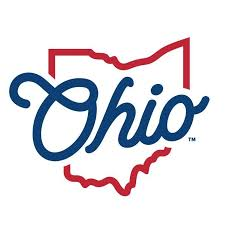

To Learn More


Ohio, often called the Buckeye State, is known for its rich history and vibrant culture.
It is home to the world-renowned Cedar Point amusement park, often referred to as
the "Roller Coaster Capital of the World," attracting thrill-seekers from around the globe.
Ohio is also famous for its diverse culinary offerings, including Cincinnati-style chili and
Buckeyes, a popular chocolate-peanut butter confection.
The state's economy is bolstered by a strong agricultural
sector, making it one of the top producers of soybeans
and corn in the nation.
Additionally, Ohio boasts
several prestigious universities,
including Ohio State University, which
contributes significantly to education
and research in the region.